AZ-140 Azure Virtual Desktop Practice Test
Host pools, FSLogix, RDP Shortpath, identity, and autoscale, including three select-2 questions. Every answer links to Microsoft Learn.
Start the AZ-140 test →Your guide to better sysops
SysOpsBits
Free practice tests, step-by-step Azure Virtual Desktop and AZ-104 labs, and compressed study guides, written by a PMP-certified sysadmin with seven Microsoft certifications.
Scenario-based questions mapped to the current official skills outlines, with an explanation for every answer. No sign-up.
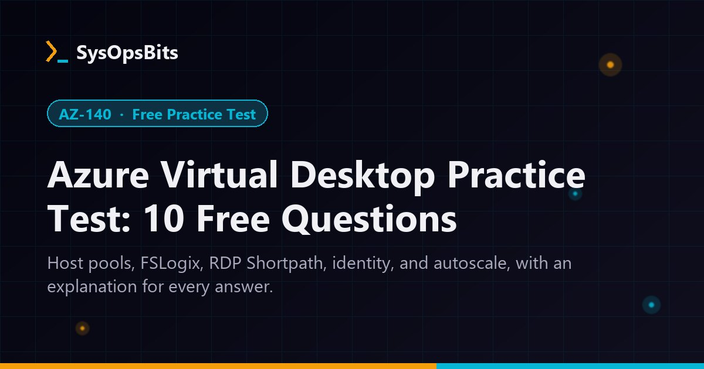
Host pools, FSLogix, RDP Shortpath, identity, and autoscale, including three select-2 questions. Every answer links to Microsoft Learn.
Start the AZ-140 test →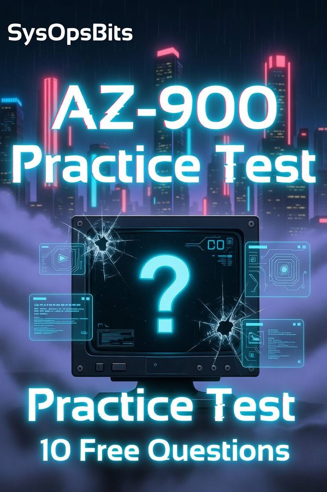
Cloud concepts, Azure architecture and services, and management and governance. A good first check before you book the exam.
Start the AZ-900 test →
Identity and governance, storage, compute, networking, and monitoring, the five areas the AZ-104 exam weights.
Start the AZ-104 test →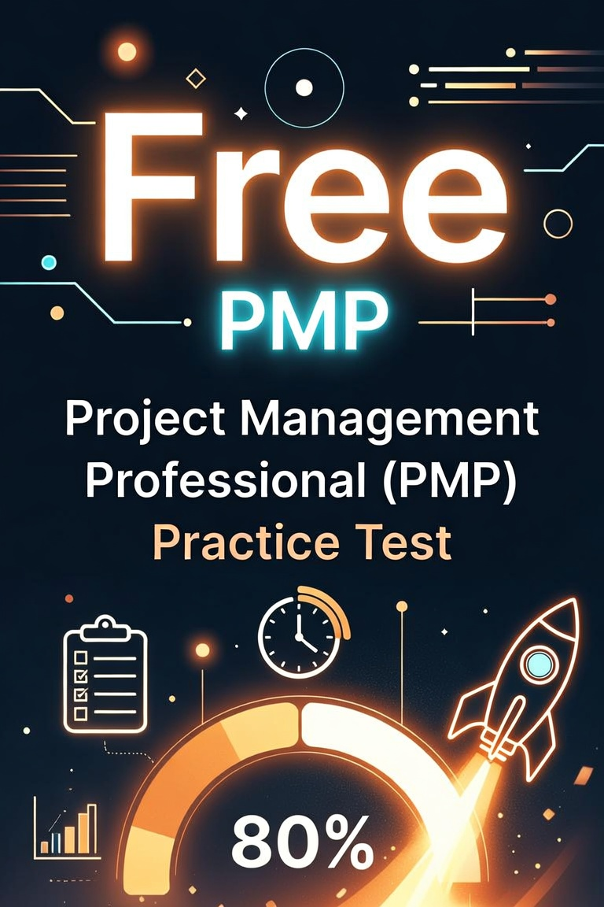
Twenty situational questions across the People, Process, and Business Environment domains, with an explanation for every answer.
Start the PMP test →New guides on Azure mandatory MFA, private subnets, and Windows Autopilot, plus the latest Azure Virtual Desktop labs.
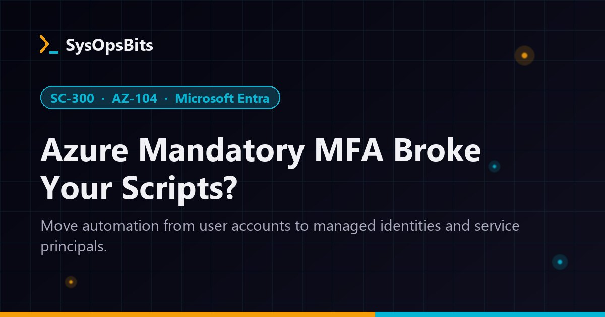
Azure now requires MFA for CLI, PowerShell, and IaC changes. Find the user accounts your automation uses and move them to managed identities or service principals.
Read More →
New Azure VNets default to private subnets, so VMs can't reach the internet. Choose NAT Gateway, Load Balancer outbound rules, or a public IP, and avoid five transition traps.
Read More →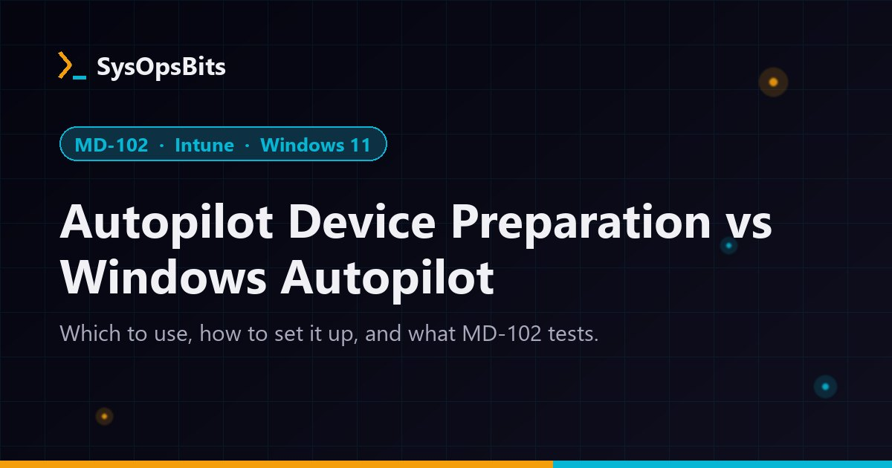
Join types, Windows 11 build rules, app limits, setup steps, and the deployment choice the MD-102 exam now tests, checked against Microsoft Learn.
Read More →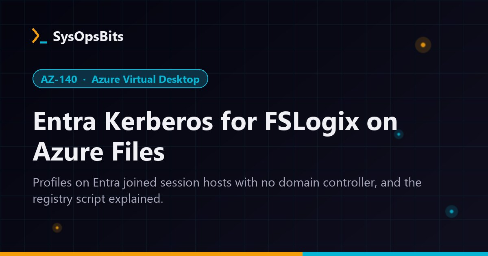
FSLogix profiles on Entra joined session hosts without a domain controller, with the registry script explained line by line.
Read More →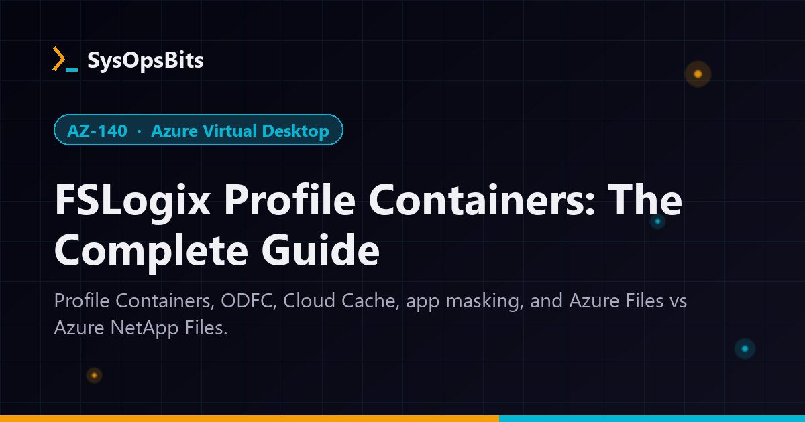
Profile Containers, ODFC, Cloud Cache, application masking, and choosing between Azure Files and Azure NetApp Files.
Read More →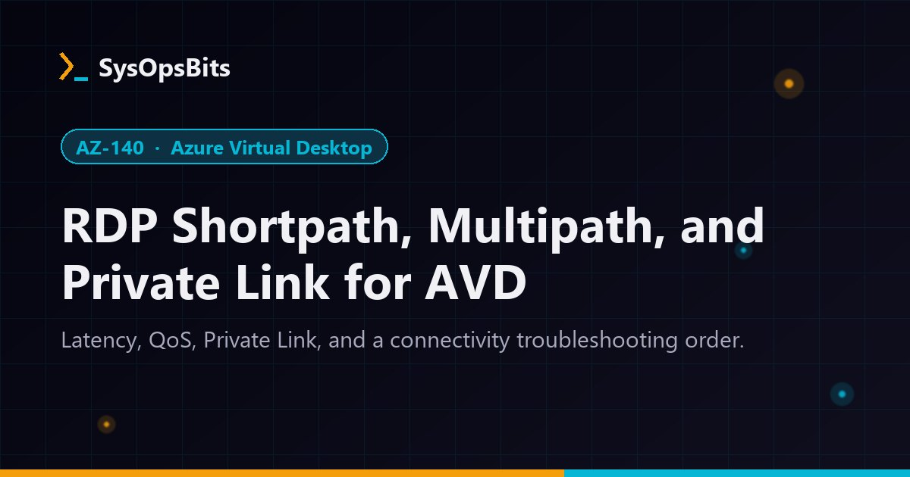
Latency assessment, QoS with DSCP 46, Private Link setup, and the order to troubleshoot AVD connectivity.
Read More →Each guide compresses the full skills outline into the pages you need, then adds a scored practice exam with an explanation for every answer. Instant PDF download.
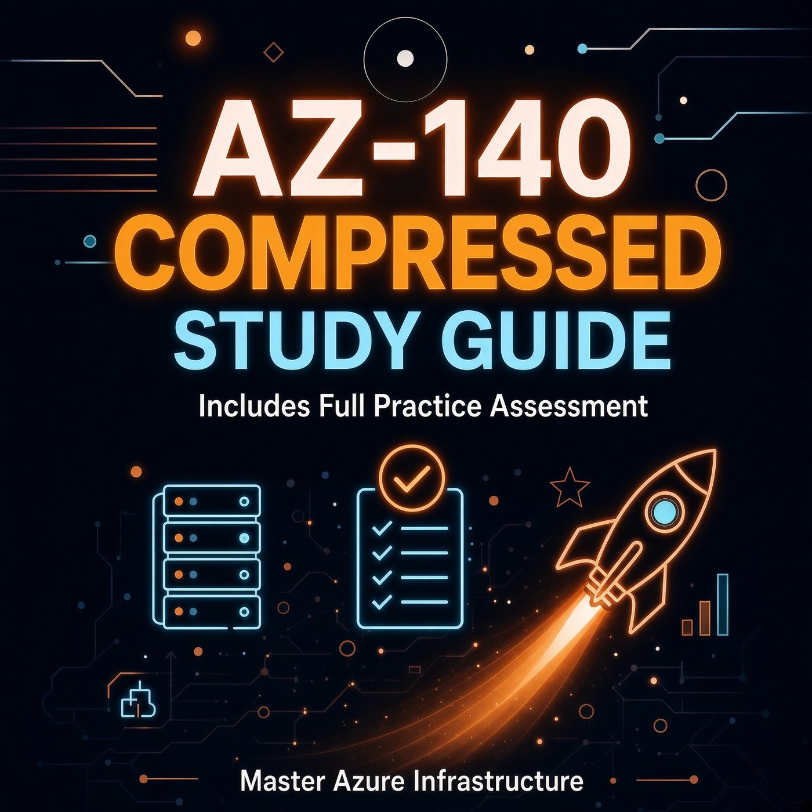
AZ-140 Exam Kit 63 pages + 55-question exam $8.99
AZ-104 Exam Cram
Notes, labs + 80-question exam
$8.99
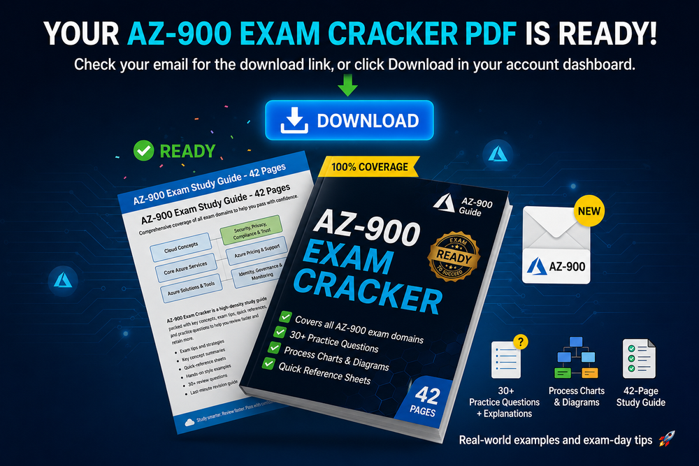
AZ-900 Exam Cracker 61 pages + 40-question test $8.99 PMP Exam Cracker
64 pages + 80-question test
$8.99
PMP Exam Cracker
64 pages + 80-question test
$8.99
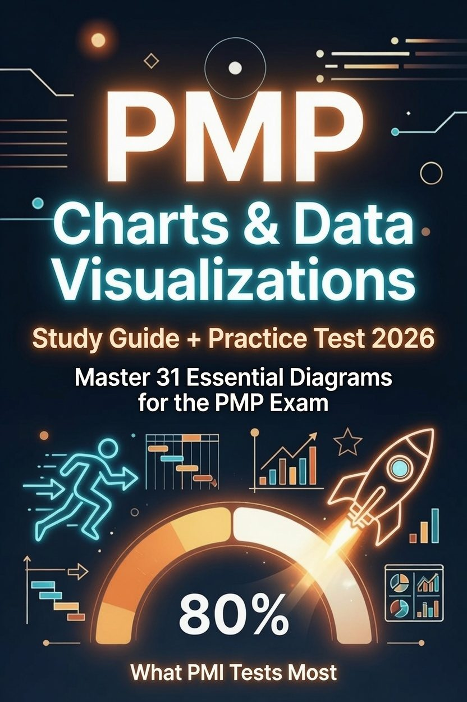
PMP Charts & Visuals 31 charts + 40-question test $6.99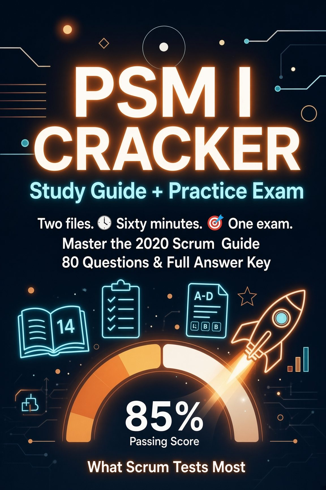
PSM I Exam Cracker 14 pages + 80-question exam $8.99AZ-140, AZ-104, AZ-900, and SC-900 guides, Entra ID, Conditional Access, networking, and PowerShell.
PMP (PMBOK 8) and PSM I prep: formulas, charts, agile vs predictive, RACI, and stakeholder traps.
Linux backups with Restic, a secure Samba server, local LLMs with Ollama, and the CLI tools sysadmins use daily.
VPS hosting, Docker vs Kubernetes, VirtualBox vs Hyper-V, UniFi vs pfSense, and home-office gear.
The Azure and PMP guides come from someone who holds those certifications and does the work every day. See the credentials.
Exam content follows Microsoft's and PMI's current published skills outlines, and gets updated when they change.
Tutorials and practice tests are free. The paid guides are for when you want everything in one place.